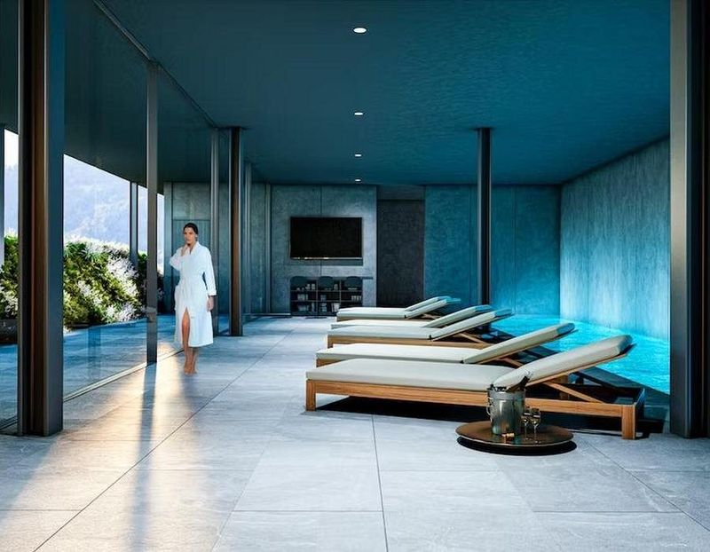
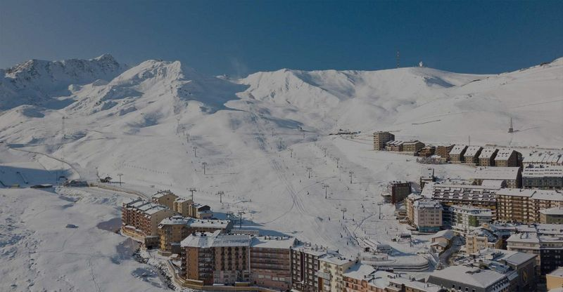
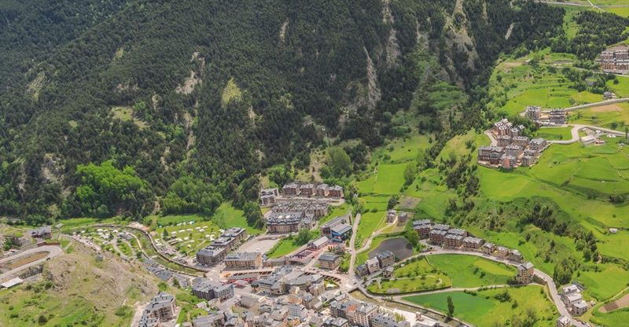
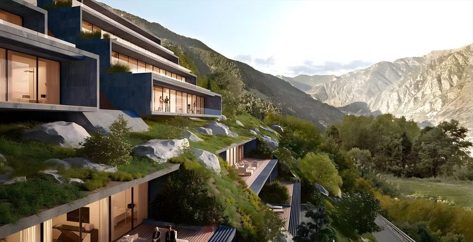
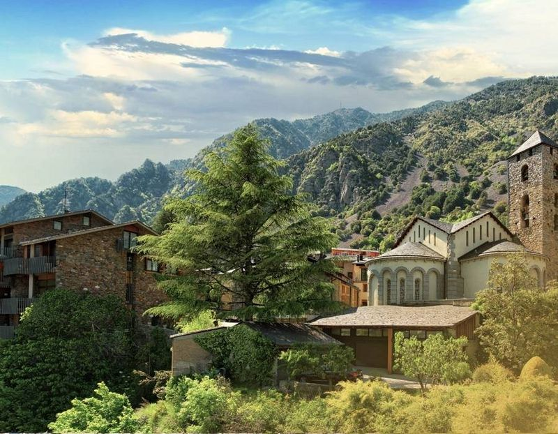

Idees per cuidar la teva propietat
Articles sobre gestió de propietats, comunitats i el mercat immobiliari a Andorra.
Els articles estan disponibles en castellà.
El mercado inmobiliario andorrano entra en fase de moderación
Las transacciones caen por tercer trimestre consecutivo mientras el precio de cierre se mantiene. Qué significa para los propietarios.
Fuentes: El Periòdic d'Andorra, Diari d'Andorra, La Veu Lliure, All Andorra
Andorra la Vella revisa su plan urbanístico: un 40% menos de edificabilidad
Edificios de hasta siete plantas y más cesión para zonas verdes. Las claves del nuevo POUP y cómo puede afectar al parque existente.
Fuentes: Diari d'Andorra, Bondia, Altaveu, El Periòdic d'Andorra

Cómo cambiar de administrador de fincas sin complicaciones
Cambiar de administrador es más sencillo de lo que parece. Te explicamos el proceso paso a paso.

Tu comunidad lista para el invierno: checklist de mantenimiento
Las revisiones clave antes de la llegada del frío y la nieve para evitar sorpresas.

¿Qué hace un administrador de fincas y por qué es importante?
Mucho más que llevar las cuentas: las funciones que mantienen una comunidad en marcha.

Gestiona tu propiedad en Andorra con Adriatic
Qué significa delegar la gestión de tu inmueble o comunidad y cómo lo hacemos en Adriatic.
¿Por qué invertir en propiedades en Andorra es una gran oportunidad?
Estabilidad, calidad de vida y un entorno único: las claves que hacen de Andorra un destino atractivo.

El mercado inmobiliario en Andorra en 2024
Una mirada a las tendencias del mercado y a por qué la gestión profesional gana peso.